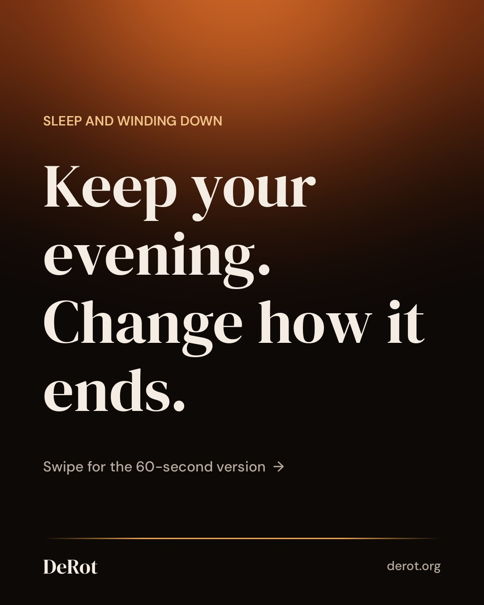
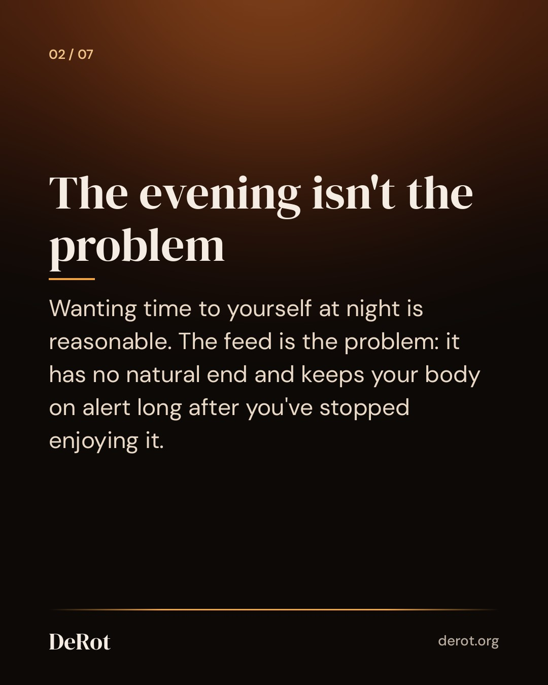
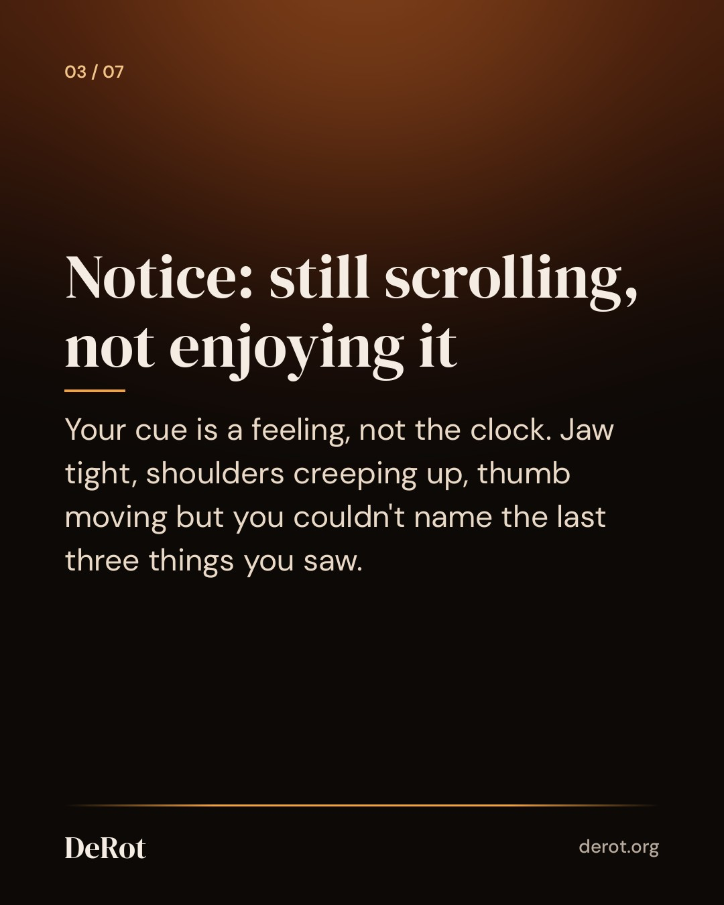
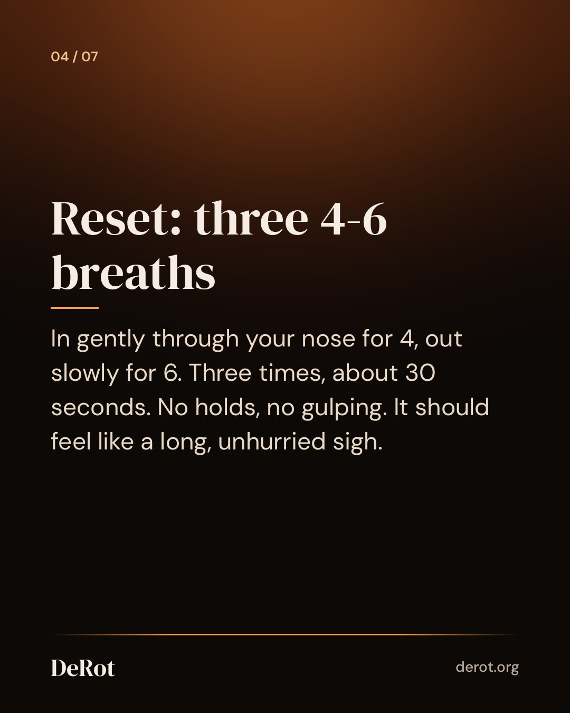
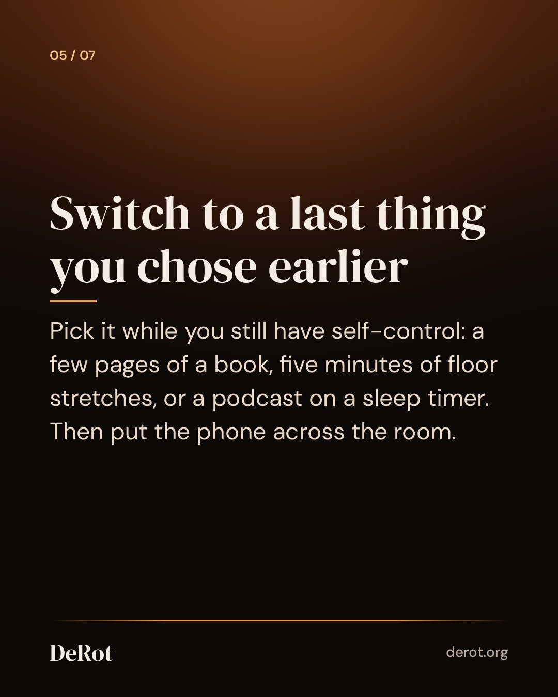
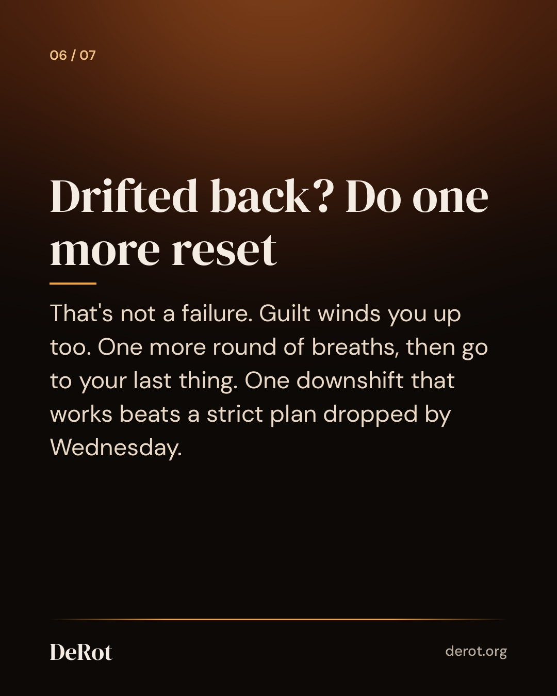
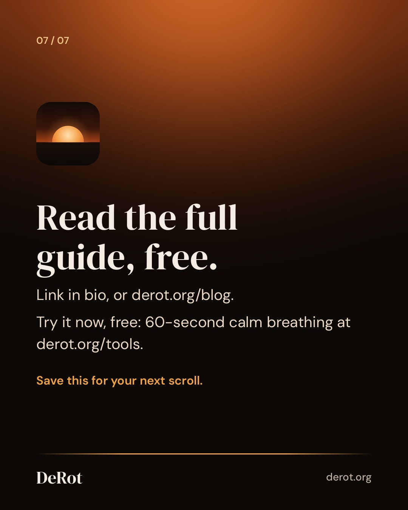

How to Stop Revenge Bedtime Procrastination and Keep Your Evening
Slides (Threads cover image; Instagram posts the reel)







Instagram Reel (34s)
Instagram caption
Still scrolling at 11:40 but no longer enjoying it? That's your off-ramp. Breathe in gently through your nose for 4, out slowly for 6. Do it three times, about 30 seconds, no holds. Then switch to a calm last thing you picked earlier: a book, some stretches, a podcast on a sleep timer. Phone across the room. You keep the me time. You just change how it ends. Full guide: link in bio. #breathwork #nervoussystemregulation #bedtimeroutine #sleephygiene #eveningroutine
Threads
Something useful about revenge bedtime procrastination: the evening isn't the problem, the feed is. The fix isn't a strict bedtime. It's noticing the moment you're still scrolling but not enjoying it, taking three slow breaths (in for 4, out for 6, about 30 seconds), then switching to a calm last thing you picked earlier. https://derot.org/blog/stop-revenge-bedtime-procrastination/
Revenge bedtime procrastination is staying up later than you planned because late night feels like the only time that's yours. Wanting that time is reasonable. The feed is what stretches one hour into three. Instead of a strict bedtime, try a check-in. Set an alarm 30 to 45 minutes before you want to be asleep. When it goes off, ask whether you're enjoying the scroll or just still there. Then breathe in for 4 and out for 6, three times, and switch to a calm last thing you chose earlier, like a book or a few stretches. The full guide covers what the research says and a 60-second evening script you can use tonight.
Schedule (UTC)
| queued | 2026-11-27T23:14:00+00:00 | ||
| threads | queued | 2026-11-27T23:14:00+00:00 | |
| queued | 2026-11-27T23:30:00+00:00 |